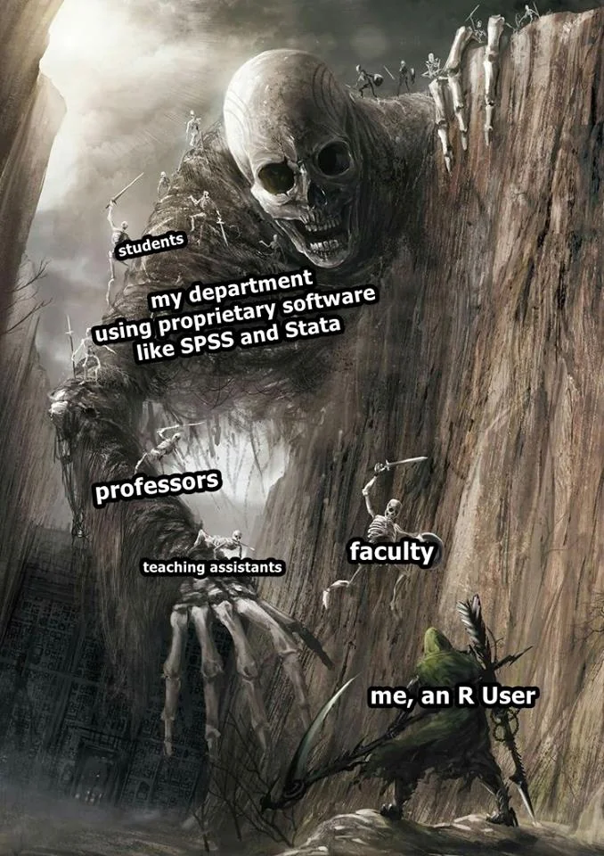

Day 5 - File Management and Workflow

Software Session
Using R Projects
herepackageFolder Structure
Takeaways
R Projects
We used the setwd() command till now to trace the files we need in our work. As your work expands, projects will have multiple datasets to be loaded, different subsidiary scripts to be used, and multiple outputs to be saved.
A first order problem related to both file management and reproducability of code is the usage of file paths. Using absolute paths, like ~/User/MyName/Documents/..... becomes cumbersome and also inhibits efficiency of reproducability. Every time someone else runs the script, they will have to change the file paths in all the instances in Rscripts or .qmd file to locate the related datasets as well as other objects. Similarly, there would be issues with saving objects in new places. A partially efficient way we used till now involved using setwd() to direct R to a new working directory; this is also called usage of relative paths
R Projects is a built-in mechanism in RStudio for seamless file management and usage of relative paths.
Let’s start by creating a new project. Click File > New Project. Name the new project govt-8001-dataessay.
here package
An efficient file and folder management system is going to be crucial as we move into working with serious projects. As stressed earlier, keeping and using all the files associated with a project in a comprehensible folder system is facilitated by R Projects. You would ideally want to create your own template for folder management that you follow across proejcts. For starters, the folder structure below is the one created for your data essay assignment in Govt 8001 or Quant 1.
You can use the point-and-click fucntionality in your computers to create this strcuture. Later today, we will briefly go through an R script that do this programmatically.
📦 govt-8001-dataessay
├─ govt-8001-dataessay.RProj
├─ 000-setup.R
├─ 001-eda.qmd
├─ 002-analysis.qmd
└─ 003-manuscript.qmd
├─ Data
│ ├─ Raw
│ │ ├─ Dataset1
│ │ │ ├─ dataset1.csv
│ │ │ └─ codebook-dataset1.pdf
│ │ └─ Dataset2
│ │ ├─ ...dta
│ │ └─ codebook-dataset2.pdf
│ └─ Clean
│ └─ Merged-df1-df2.csv
├─ Scripts
│ ├─ R-scripts
│ │ ├─ plotting-some-variable.R
│ │ └─ exploring-different-models.R
│ ├─ Stata-Scripts
│ │ └─ seeing-variable-labels.do
│ └─ Python-Scripts
│ └─ scraping-data-from-website.py
└─ Outputs
├─ Plots
│ ├─ ...jpeg
│ └─ ...png
├─ Tables
│ └─ .csv
└─ Text
└─ ...txtSuggested folder structure for a Quant-1 project
While we learnt how to create or associate an .RProj with a folder, integrating it with here() function from the here package, makes things further smoother. Let’s do it with the following exercise.
Make it a habit of using R Prohects and here() function in your scripts for writing portable code.
You can read this quick and informative blogpost on using these two here.
Folder Structure
Let’s look at the other opened RStudio window. This is the one associated with govt-8001-dataessay.
We ideally want a folder structure that is easily understandable to us and others.
📦 govt-8001-dataessay
├─ govt-8001-dataessay.RProj
├─ 000-setup.R
├─ 001-eda.qmd
├─ 002-analysis.qmd
└─ 003-manuscript.qmd
├─ Data
│ ├─ Raw
│ │ ├─ Dataset1
│ │ │ ├─ dataset1.csv
│ │ │ └─ codebook-dataset1.pdf
│ │ └─ Dataset2
│ │ ├─ ...dta
│ │ └─ codebook-dataset2.pdf
│ └─ Clean
│ └─ Merged-df1-df2.csv
├─ Scripts
│ ├─ R-scripts
│ │ ├─ plotting-some-variable.R
│ │ └─ exploring-different-models.R
│ ├─ Stata-Scripts
│ │ └─ seeing-variable-labels.do
│ └─ Python-Scripts
│ └─ scraping-data-from-website.py
└─ Outputs
├─ Plots
│ ├─ ...jpeg
│ └─ ...png
├─ Tables
│ └─ .csv
└─ Text
└─ ...txtWe can create this struture by using point and click system on our laptops. But since we might want to use the same folder structure repetitively it will make sense to be lazy and do it programmatically.
Takeaways
Here’s a quick workflow for starting a new project or assignment or paper.
Make a new folder in your computer with apt name. Ideally,
govt-<coursecode>-<project>.Start RStudio.
Create a new Rstudio Project by clicking
File > New Project. Name itgovt-<coursecode>-<project.Check if now your RStudio Window shows the project name on top right corner. If not, go to folder and double-click the
.RProjfile.Paste the
000-setup.Rfile in the main project folder. Open it in the same Rstudio window with the project and run the complete file. Your folder structure is created.Copy your raw data in
Data/Rawfolder. Similarly, your scripts inScripts/RScriptsfolderStart your new
.qmdfile and save it in the main folder.Remember to use
here()package extensively in both scripts and quarto file when loading or saving the data.You can always zip the whole project folder for sharing. The receiver will just need to unzip and run the code after starting the associated
.RProjfile, without changing file paths on their computer.